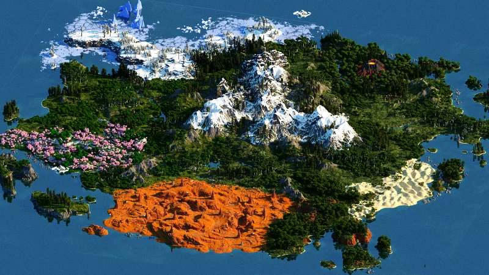

EuroLatam
EuroLatam
01
Un mundo hecho a mano
Nada de terreno al azar. EuroLatam 7 se juega sobre un mapa diseñado pieza a pieza: glaciares al norte, cordilleras nevadas en el centro, cañones rojizos al sur y costas llenas de islas por descubrir.
Explorar